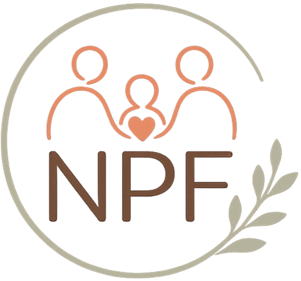
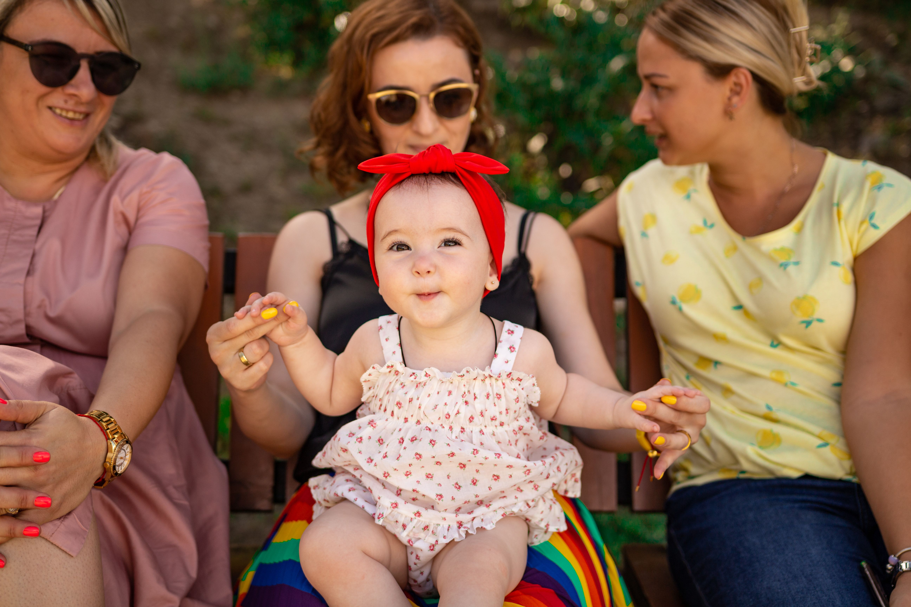

Om gruppen
Ny i stan är till för föräldrar som vill bygga ett nätverk från början. Här kan du hitta någon att promenera med, fika med eller skriva till när dagarna känns lite ensamma.


För dig som nyligen flyttat, bytt område eller bara vill hitta nya personer att säga hej till i vardagen.
Ny i stan är till för föräldrar som vill bygga ett nätverk från början. Här kan du hitta någon att promenera med, fika med eller skriva till när dagarna känns lite ensamma.
14 juni, 11.00
Stadsparken, Göteborg. Vi ses vid stora gräsmattan och tar en enkel första träff.
Ny i Göteborg · vill hitta promenadsällskap
Hisingen · pappa till Milo
Centrum · söker andra daglediga